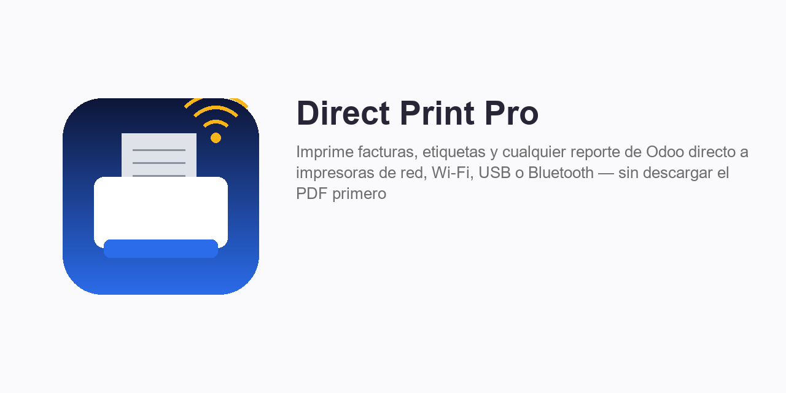
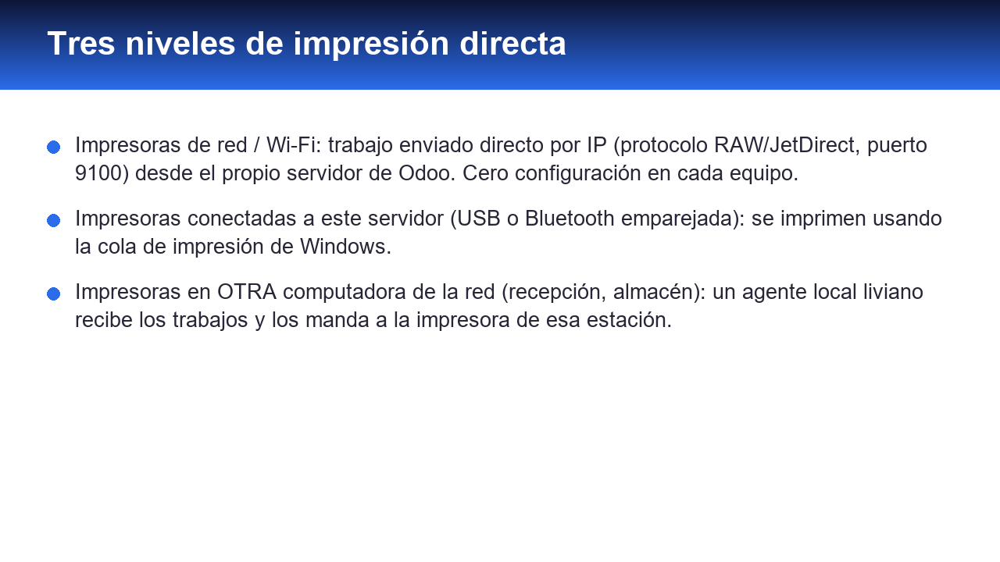
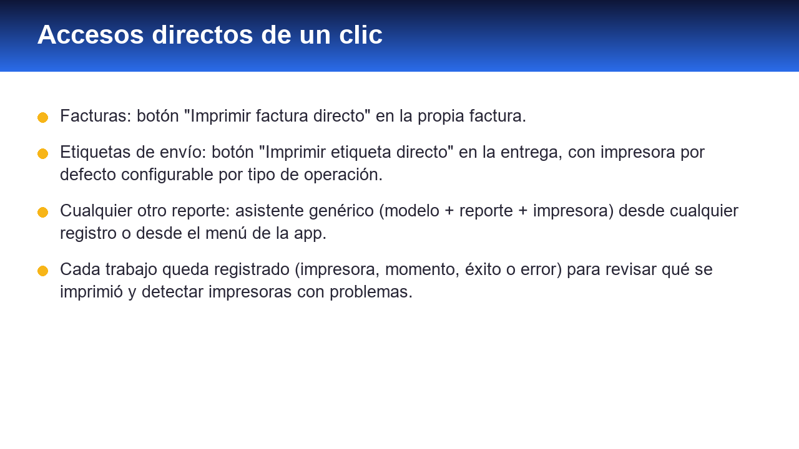
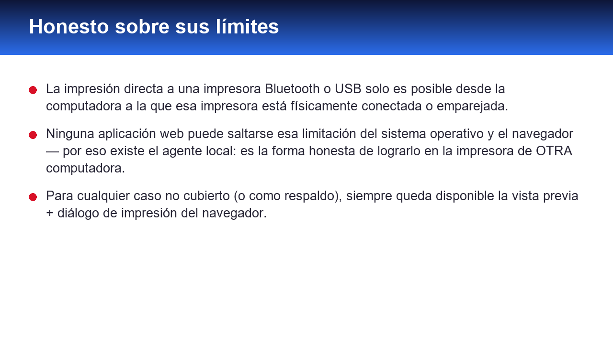

Imprime cualquier reporte de Odoo directamente en una impresora, sin pasar por "descargar el PDF y abrirlo a mano". Funciona en tres niveles, según dónde esté la impresora.



Además, para cualquier caso no cubierto (o como respaldo si una impresora está desconectada), siempre queda disponible la opción de vista previa + diálogo de impresión del navegador — tampoco descarga ningún archivo.
Cada trabajo de impresión queda registrado (impresora, momento, éxito o error) para poder revisar qué se imprimió y detectar impresoras con problemas.
La "impresión directa" a una impresora Bluetooth o USB solo es posible desde la computadora a la que esa impresora está físicamente conectada o emparejada — ninguna aplicación web, de Odoo o de cualquier otro proveedor, puede saltarse esa limitación del sistema operativo y el navegador. Por eso el nivel 3 (agente local) existe: es la forma honesta de lograr impresión directa en la impresora de OTRA computadora.
pywin32; en Linux/Mac usa el comando lp
de CUPS (ya viene instalado en casi cualquier distro).Soporte: luissalvador1987@gmail.com